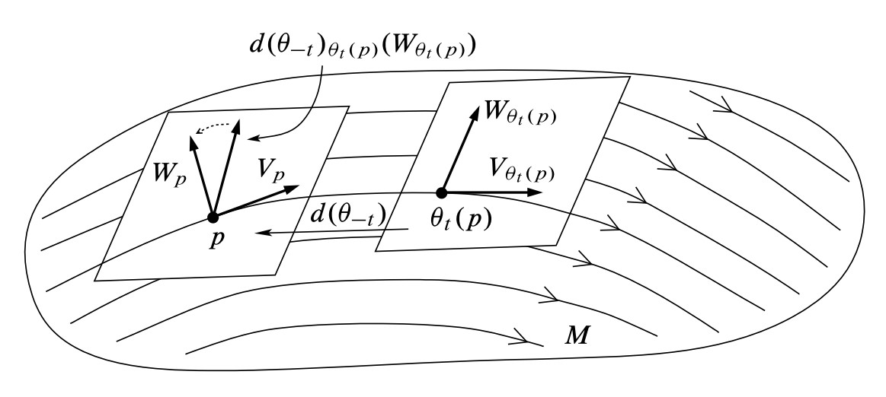

[GTM-218] John M. Lee - Introduction to Smooth Manifolds 第三章笔记。
Integral Curves 积分曲线
积分曲线的定义
If $V$ is a vector field on $M$, an integral curve of $V$ is a differentiable curve $\gamma:J \rightarrow M$ whose velocity at each point is equal to the value of $V$ at that point.
If $0 \in J$, the point $\gamma(0)$ is called the starting point of $\gamma$.
积分曲线的存在性
Let $V$ be a smooth vector field on a smooth manifold $M$. For each point $p \in M$, there exist $\varepsilon > 0$ and a smooth curve $\gamma:(-\varepsilon, \varepsilon) \rightarrow M$ that is an integral curve of $V$ starting at $p$.
Coordinate representation (ODE)
积分曲线的基本变换
Rescaling Lemma
Let $V$ be a smooth vector field on a smooth manifold $M$, let $J \subset \mathbb{R}$ be an interval, and let $\gamma: J \rightarrow M$ be an integral curve of $V$. For any $a \in \mathbb{R}$, the curve $\tilde{\gamma}: \tilde{J} \rightarrow M$ defined by $\tilde{\gamma} = \gamma(at)$ is an integral curve of the vector field $aV$, where $\tilde{J} = \{t: at \in J\}$.
Translation Lemma
Let $V$ be a smooth vector field on a smooth manifold $M$, let $J \subset \mathbb{R}$ be an interval, and let $\gamma: J \rightarrow M$ be an integral curve of $V$. For any $b \in \mathbb{R}$, the curve $\tilde{\gamma}: \tilde{J} \rightarrow M$ defined by $\tilde{\gamma} = \gamma(t + b)$ is an integral curve of the vector field $V$, where $\tilde{J} = \{t: t+b \in J\}$.
Naturality of Integral Curves 向量场的$F$相关与积分曲线
Suppose $M$ and $N$ are smooth manifolds and $F: M \rightarrow N$ is a smooth map. Then $X \in \mathfrak{X}(M)$ and $Y \in \mathfrak{X}(M)$ are $F$-related if and only if $F$ takes integral curves of $X$ to integral curves of $Y$, meaning that for each integral curve $\gamma$ of $X$, $F \circ \gamma$ is an integral curve of $Y$.
Flows 流
Global Flows 全局流，单参数变换群
全局流的定义
A global flow on $M$ (also called a one-parameter group action) to be a continuous map $\theta: \mathbb{R} \times M \rightarrow M$ satisfying the following properties for all $s, t \in \mathbb{R}$ and $p \in M$:
For each $t \in \mathbb{R}$, define a continuous map $\theta_t: M \rightarrow M$ by $\theta_t(p) = \theta(t, p)$. The defining properties of flows are equivalent to the group laws
Each map $\theta_t: M \rightarrow M$ is a homeomorphism, with $\theta_{-t}$ as its inverse. And if the flow is smooth, $\theta_t$ is a diffeomorphism.
For each $p \in M$, define a curve $\theta^{(p)}: \mathbb{R} \rightarrow M$ by $\theta^{(p)}(t) = \theta(t, p)$.
全局流的无穷小生成元
If $\theta: \mathbb{R} \times M \rightarrow M$ is a smooth global flow, for each $p \in M$ define a tangent vector $V_p \in T_pM$ by
The assignment $p \mapsto V_p$ is a rough vector field on $M$, which is called the infinitesimal generator of $\theta$.
Let $\theta: \mathbb{R} \times M \rightarrow M$ be a smooth global flow on a smooth manifold $M$,
- The infinitesimal generator $V$ of $\theta$ is a smooth vector field on $M$.
- Each curve $\theta(p)$ is an integral curve of $V$.
Local Flows 局部流，局部单参数变换群
局部流的定义
If $M$ is a manifold, a flow domain for $M$ is an open subset $\mathfrak{D} \subset \mathbb{R} \times M$ with the property that for each $p \in M$, the set $\mathfrak{D}^{(p)} = \{t \in \mathbb{R}: (t,p) \in \mathfrak{D} \}$ is an open interval containing $0$.
A flow (local flow, local one-parameter group action) on $M$ is a continuous map $\theta: \mathfrak{D} \rightarrow M$, where $\mathfrak{D} \subset \mathbb{R} \times M$ is a flow domain, that satisfies the following group laws:
For all $p \in M$,
For all $p \in M, s \in \mathfrak{D}^{(p)}$ and $t \in \mathfrak{D}^{(\theta(s, p))}$ such that $s+t \in \mathfrak{D}^{(p)}$,
If $\theta$ is a flow, we define $\theta_t(p) = \theta^{(p)}(t) = \theta(t, p)$ whenever $(t, p) \in \mathfrak{D}$.
For each $t \in \mathbb{R}$, define $M_{t}=\{p \in M:(t, p) \in \mathfrak{D}\}$.
局部流的无穷小生成元
If $\theta: \mathfrak{D} \rightarrow M$ is smooth flow, the infinitesimal generator of $\theta$ is defined by $V_p = {\theta^{(p)}}’(0)$.
If $\theta: \mathfrak{D} \rightarrow M$ is a smooth flow, then
- The infinitesimal generator $V$ of $\theta$ is a smooth vector field.
- Each curve $\theta(p)$ is an integral curve of $V$.
Fundamental Theorem on Flows 极大局部流的存在唯一性定理
积分曲线，流的极大性
A maximal integral curve is one that cannot be extended to an integral curve on any larger open interval.
A maximal flow is a flow that admits no extension to a flow on a larger flow domain.
局部流基本定理：向量场生成的极大局部流
Let $V$ be a smooth vector field on a smooth manifold $M$. There is a unique smooth maximal flow $\theta: \mathfrak{D} \rightarrow M$ whose infinitesimal generator is $V$. This flow has the following properties:
- For each $p \in M$, the curve $\theta^{(p)}: \mathfrak{D}^{(p)} \rightarrow M$ is the unique maximal integral curve of $V$ starting at $p$.
- If $s \in \mathfrak{D}^{(p)}$, then $\mathfrak{D}^{\theta(s, p)}$ is the interval $\mathfrak{D}^{(p)}-s=\left\{t-s: t \in \mathfrak{D}^{(p)}\right\}$.
- For each $t \in R$, the set $M_t$ is open in $M$, and $\theta_t: M_t \rightarrow M_{-t}$ is a diffeomorphism with inverse $\theta_{-t}$.
This flow $\theta$ is called the flow generated by $V$, or just the flow of $V$.
向量场的$F$相关与局部流
Suppose $M$ and $N$ are smooth manifolds, $F: M \rightarrow N$ is a smooth map, $X \in \mathfrak{X}(M)$ and $Y \in \mathfrak{X}(M)$. Let $\theta$ be the flow of $X$ and $\eta$ the flow of $Y$. If $X$ and $Y$ are $F$-related, then for each $t \in \mathbb{R}$, $F(M_t) \subset N_t$ and $\eta_t \circ F = F \circ \theta_t$ on $M_t$.
微分同胚与局部流
Let $F: M \rightarrow N$ be a diffeomorphism. If $X \in \mathfrak{X}(M)$ and $\theta$ is the flow of $X$, then the flow of $F_{*}X$ is $\eta_t =F \circ \theta_t \circ F^{-1}$, with domain $N_t = F(M_t)$ for each $t \in \mathbb{R}$.
Lie Derivatives 李导数
Lie导数的定义：0 时刻向量场的变动率
Suppose $M$ is a smooth manifold, $V$ is a smooth vector field on $M$, and $\theta$ is the flow of $V$. For any smooth vector field $W$ on $M$, define a rough vector field on $M$, denoted by $\mathscr{L}_VW$ and called the Lie derivative of $W$ with respect to $V$, by

Lie 导数的存在性与光滑性
Suppose $M$ is a smooth manifold, and $V, W \in \mathfrak{X}(M)$. Then
- Existence: $\mathscr{L}_VW$ exists for every $p \in M$.
- Smoothness: $\mathscr{L}_VW$ is a smooth vector field.
Lie 导数与 Lie 括号
If $M$ is a smooth manifold and $V, W \in \mathfrak{X}(M)$, then $\mathscr{L}_VW = [V, W]$.
Lie 导数的性质
Suppose $M$ is a smooth manifold, and $V, W \in \mathfrak{X}(M)$.
- $\mathscr{L}_VW = -\mathscr{L}_WV$.
- $\mathscr{L}_V[W,X] = [\mathscr{L}_VW, X] + [W, \mathscr{L}_VX]$.
- $\mathscr{L}_{[V, W]}X = \mathscr{L}_V\mathscr{L}_W X - \mathscr{L}_W\mathscr{L}_V X$.
- If $g \in C^{\infty}(M)$, then $\mathscr{L}_V(gW) = (Vg)W + g\mathscr{L}_VW$.
- If $F: M \rightarrow N$ is a diffeomorphism, then $F_{\star}(\mathscr{L}_VW) = \mathscr{L}_{F_{\star V}}{F_{\star W}}$.
向量场在更一般的时刻的变动率
Suppose $M$ is a smooth manifold and $V, W \in \mathfrak{X}(M)$. Let $\theta$ be the flow of $V$. For any $(t_0, p)$ in the domain of $\theta$,
Applications of Flows and Lie Derivatives 流与李导数的应用
Complete Vector Fields 完备向量场
完备向量场的定义：生成全局流
A smooth vector field is complete if it generates a global flow, or equivalently if each of its maximal integral curves is defined for all $t \in \mathbb{R}$.
完备向量场的充分条件
Uniform Time Lemma
Let $V$ be a smooth vector field on a smooth manifold $M$, and let $\theta$ be its flow. Suppose there is a positive number $\varepsilon$ such that for every $p \in M$, the domain of $\theta^{(p)}$ contains $(-\varepsilon, \varepsilon)$. Then $V$ is complete.
Every compactly supported smooth vector field on a smooth manifold is complete.
On a compact smooth manifold, every smooth vector field is complete.
Regular Points and Singular Points 正则点与奇异点
定义
If $V$ is a vector field on $M$, a point $p \in M$ is said to be a singular point of $V$ if $V_p = 0$, and a regular point otherwise.
积分曲线的性质
Let $V$ be a smooth vector field on a smooth manifold $M$, and let $\theta: \mathfrak{D} \rightarrow M$ be its flow.
- If $p \in M$ is a singular point of $V$, then $\mathfrak{D}^{(p)} = \mathbb{R}$ and $\theta^{(p)}$ is the constant curve $\theta^{(p)}(t) \equiv p$.
- If $p$ is a regular point, then $\theta^{(p)}: \mathfrak{D}^{(p)} \rightarrow M$ is a smooth immersion.
Canonical Form Near a Regular Point 正则点附近向量场的规范形式
Let $V$ be a smooth vector field on a smooth manifold $M$, and let $p \in M$ be a regular point of $V$. Then there exist smooth coordinates $(s^i)$ on some neighborhood of $p$ in which $V$ has the coordinate representation $\partial/\partial s^1$.
Commuting Vector Fields 可交换向量场
定义
向量场可交换 Suppose $M$ is a smooth manifold, and $V, W \in \mathfrak{X}(M)$, $V$ and $W$ commute if $VWf = WVf$ for every smooth function $f$, or equivalently if $[V, W] \equiv 0$.
向量场在某个流的作用下不变 If $\theta$ is a smooth flow, a vector field $W$ is said to be invariant under $\theta$ if $W|_{M_t}$ is $\theta_t$ -related to $W|_{M_{-t}}$ for each $t$ , or equivalently that $d\left(\theta_{t}\right)_{p}\left(W_{p}\right)=W_{\theta_{t}(p)}$ for all $(t, p)$ in the domain of $\theta$.
局部流可交换 If $\theta$ and $\psi$ are flows on $M$, we say that $\theta$ and $\psi$ commute if the following condition holds for every $p \in M$: whenever $J$ and $K$ are open intervals containing $0$ such that one of the expressions $\theta_t \circ \psi_s (p)$ or $\psi_s \circ \theta_t (p)$ is defined for all $(s,t) \in J\times K$, both are defined and they are equal.
向量场可交换 $\Leftrightarrow$ 一个向量场在另一个向量场生成的流作用下不变
For smooth vector fields $V$ and $W$ on a smooth manifold $M$, the following are equivalent:
- $V$ and $W$ commute.
- $W$ is invariant under the flow of $V$.
- $V$ is invariant under the flow of $W$.
Every smooth vector field is invariant under its own flow.
向量场可交换 $\Leftrightarrow$ 向量场生成的局部流可交换
Smooth vector fields commute if and only if their flows commute.